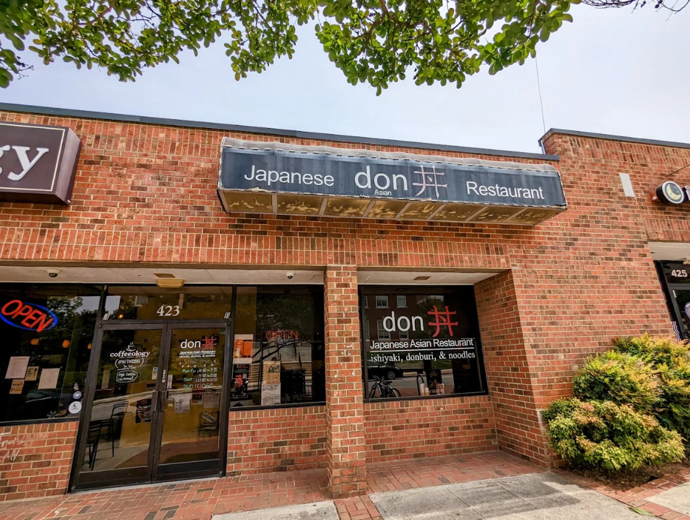
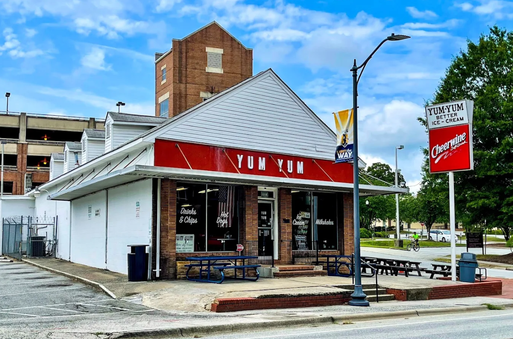

This blog is where I like to share my local food reccomendations. I am student at the
University of North Carolina at Greensboro. It is my second year and I had recently found
that people have been enjoying my reccomendations so I thought to make them public!

Don is a Japanese restaurant with simple seating on Tate Street. It is open 11am-10pm on most days
of the week.
Don specializes in Teriyaki, Donburi, and Ramen. Having been there I must say my favorite thing on the menu
is actually their curry! Japanese curry is far different to Indian curry as it is significantly less hot,
instead airing on the side of sweetness. The curry has been my favorite but it is closely followed up by
the Shoyu Ramen and the Don Katsu Don.
Yum Yum's Better Ice Cream

Yum Yum's is a classic dine in that serves hotdogs and ice cream on Spring Garden Street.
It is open 10:30am-9pm on most days of the week.
Yum Yum's specializes in Hot Dogs and Ice Cream. My favorite thing to get there is their hotdogs. In my
experience, I have not had a better one. They taste so much better than anything else I have had. The ice cream
is
Don is a Japanese restaurant with simple seating on Tate Street. It is open 11am-10pm on most days
of the week.
Don specializes in Teriyaki, Donburi, and Ramen. Having been there I must say my favorite thing on the menu
is actually their curry! Japanese curry is far different to Indian curry as it is significantly less hot,
instead airing on the side of sweetness. The curry has been my favorite but it is closely followed up by
the Shoyu Ramen and the Don Katsu Don.